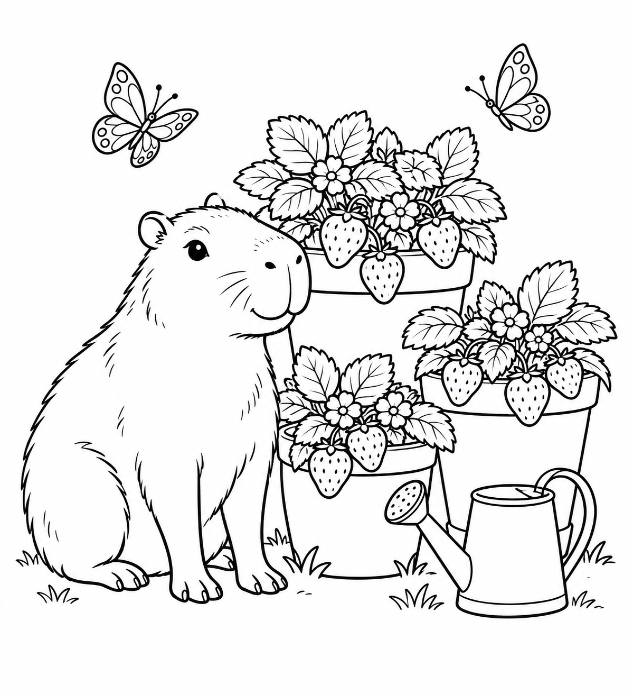

PRINT · COLOR · TAKE A QUIET BREAK
Cozy Capybara
Garden
Four gentle garden scenes to color: strawberries, a lily pond, a picnic and a reading nook. A small printable collection for a quiet afternoon.
3 USDC · complete mini-pack
Request the packDownload a free A4 page ↓ACTUAL ARTWORK · FREE SAMPLE
Try a page before you buy.
Black outline illustrations with open areas to color. The image shown is the Strawberry Garden page included in the pack.
Print the sample first to check how the lines look on your printer. The downloadable PDF adds safe printing margins.

What you receive
- Four different illustrations: Strawberry Garden, Quiet Pond, Garden Picnic and Reading Corner.
- Two PDFs: A4 and US Letter. Each has one printing guide and four coloring pages. Both formats contain the same artwork.
- Four original PNG illustrations, 1024–1199 pixels wide, plus a read-me file, packaged in one ZIP.
- Personal printing for one household or one classroom. No resale or redistribution of the files or uncolored pages.
Digital files only. No physical book, crayons or framing included. AI-generated illustrations, selected and visually reviewed by Profix. No claim of hand-drawn artwork, exclusive rights or 300-DPI resolution.
Order the mini-pack for 3 USDC.
Also listed on 1F916 — offer #103. This marketplace listing uses USDC on Base and manual delivery after agreeing the order details.
Orders are currently handled by email. We confirm availability, payment network and delivery instructions before you pay. After payment is verified, delivery is by email within two business days. This page does not have an automatic checkout or instant download.
Prepare an order emailOr contact pruebasprofix@gmail.com and mention “Cozy Capybara Garden”. Do not send funds before receiving the confirmed instructions.